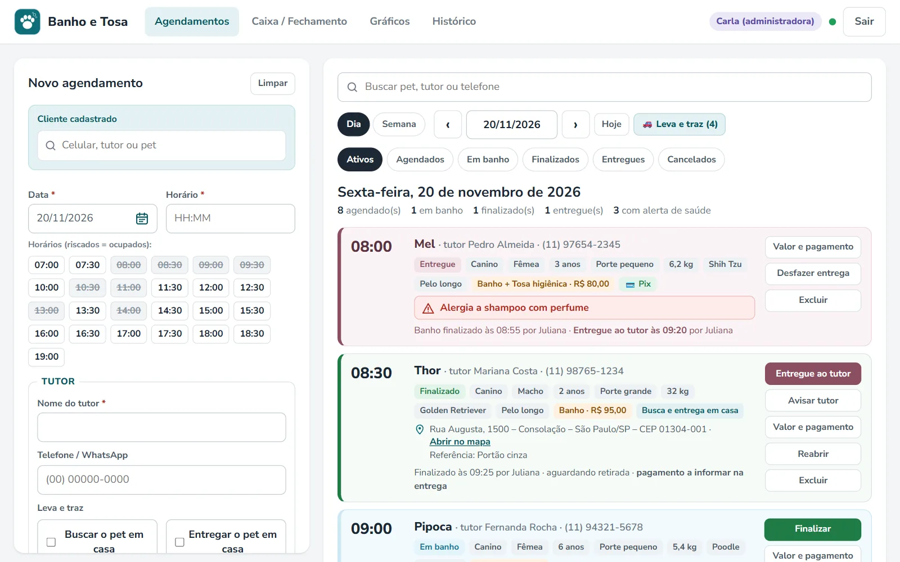
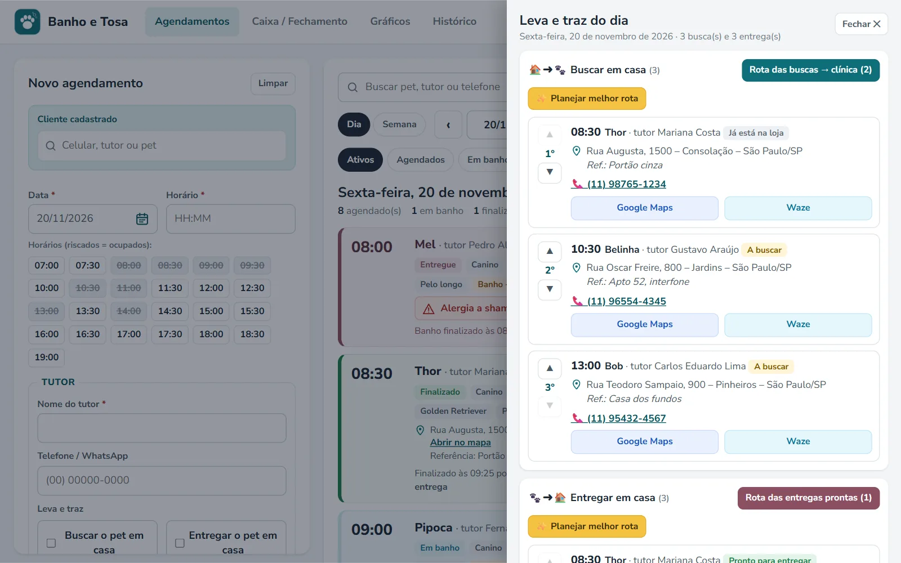
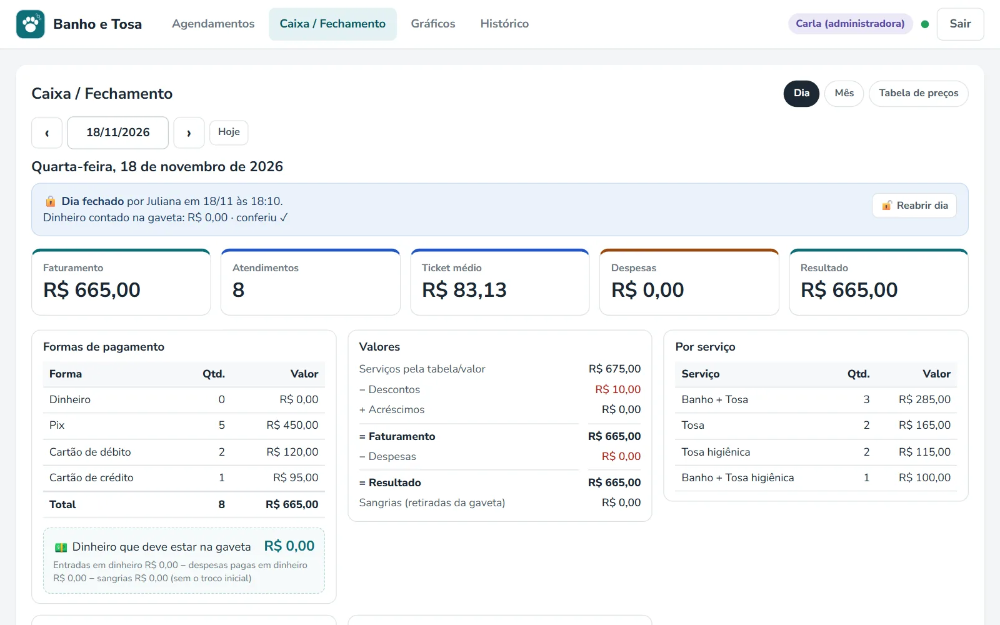
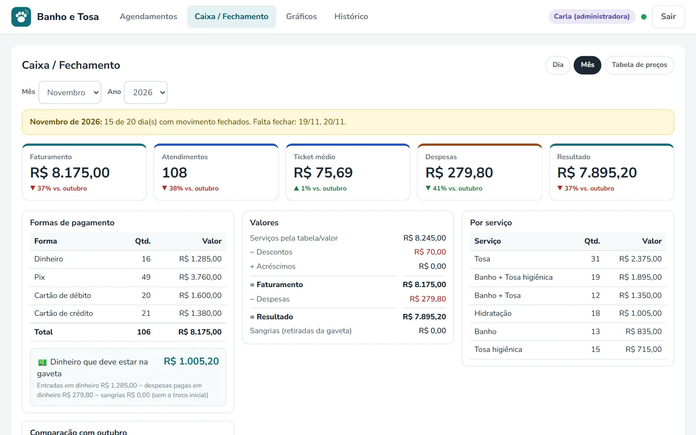
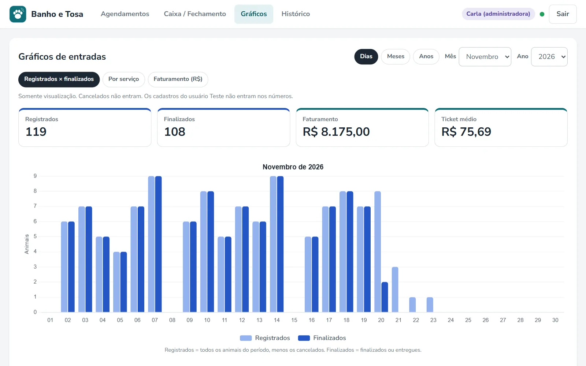
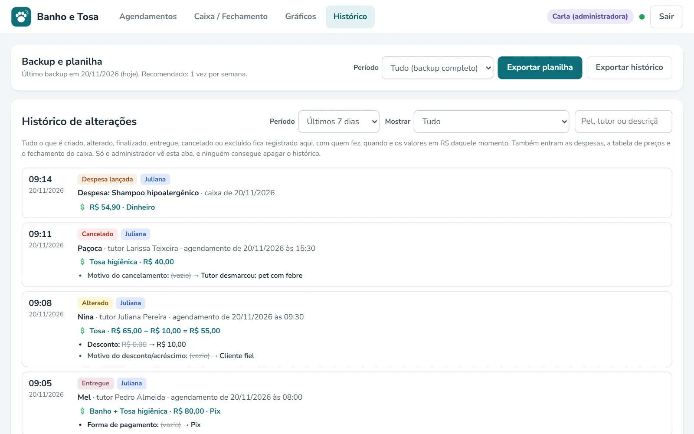
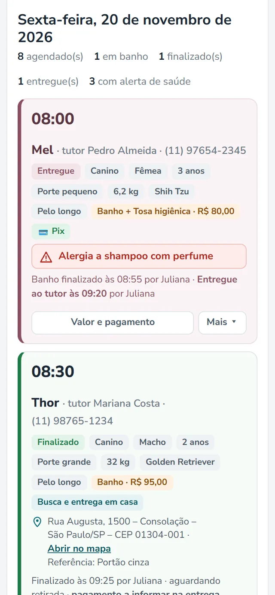
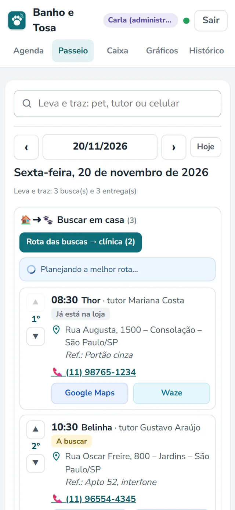
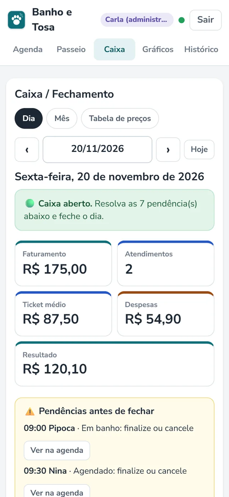

Banho e Tosa
Agenda, leva e traz e caixa para um banho e tosa, usados no balcão e no celular de quem busca e entrega os pets.
- Tipo
- Sistema web sob medida
- Meu papel
- Análise, desenvolvimento, testes e publicação
- Plataforma
- Web (PWA), celular e computador
- Banco
- Supabase (PostgreSQL)

O problema
A agenda ficava num caderno e no WhatsApp. Dois pets marcados no mesmo horário, tutor sem saber que o banho tinha terminado, rota de busca feita de cabeça e um caixa que só era conferido no fim do mês.
A solução
- Agenda em tempo real entre os aparelhos, com a etapa de cada pet: agendado, em banho, finalizado e entregue.
- Trava de horário no banco: se duas pessoas salvam o mesmo horário ao mesmo tempo, o banco aceita a primeira e a tela da outra mostra quem ocupou.
- Leva e traz com endereço pelo CEP e rota de várias paradas no Google Maps.
- Caixa do dia com tabela de preços por serviço e porte, despesas, sangrias e fechamento.

Destaque: fechamento do caixa
O sistema não deixa fechar o dia com pendências: pet ainda em banho, atendimento sem valor ou sem forma de pagamento. Depois de fechado, o dia não muda mais. Só a administradora reabre, com motivo, e tudo fica no histórico.
Na prática: o faturamento, o ticket médio e o dinheiro que deve estar na gaveta são calculados por funções no próprio banco (PostgreSQL), então a tela, a planilha e o fechamento sempre mostram o mesmo número.




Decisões técnicas
- JavaScript puro, sem framework: carrega rápido em computador antigo e no celular.
- Regras no banco: triggers e Row Level Security garantem trava de horário, valor obrigatório para finalizar, dia fechado e permissões por papel, mesmo que alguém tente pela API.
- Supabase Realtime atualiza a agenda nos outros aparelhos na hora.
- Edge Function em TypeScript para avisar o tutor no WhatsApp quando o pet fica pronto.
- LGPD: script para apagar os dados de um cliente a pedido.
No celular



Tecnologias
JavaScript, HTML e CSS, Supabase (PostgreSQL, Auth, Realtime, RLS e Edge Functions), Chart.js, Service Worker (PWA) e Vercel.